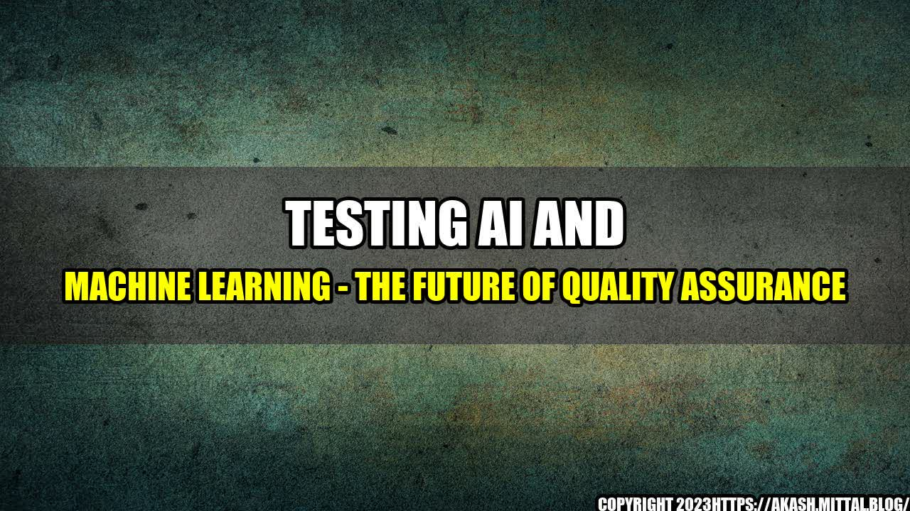

Testing AI and Machine Learning - The Future of Quality Assurance

Picture this - it's the year 2030 and you walk into a grocery store. Instead of having to manually scan each item or wait in line, the store has an AI-powered system that can detect what items you have picked up and automatically charge you for them as you leave the store. This isn't just a futuristic dream but a reality that is rapidly becoming a part of our everyday lives. As AI and machine learning technologies become more advanced, the role of quality assurance testing is becoming increasingly important.
Let's look at a few quantifiable examples of how AI and machine learning are changing the game for quality assurance testing:
- Increased Efficiency: AI-powered testing can analyze thousands of data points in seconds, which reduces the time and cost of manual testing processes.
- Better Accuracy: Machine learning algorithms can learn from previous testing data, which helps to identify defects and prevent them from recurring in future testing.
- Improved Predictability: AI-powered systems can predict which tests are most likely to fail and prioritize them accordingly, which helps to optimize testing processes and improve product quality.
The
The advancements in AI and machine learning technologies are transforming the way we approach quality assurance testing. The future of testing is smarter, faster, and more efficient. How can your business stay ahead of the curve?
The
- To stay competitive, businesses need to adopt AI-powered testing processes to improve efficiency, accuracy, and predictability.
- Quality assurance testers need to learn new skills to adapt to these changing technologies, such as developing algorithms, data analysis, and test automation.
- AI and machine learning are powerful tools, but they aren't foolproof. Humans still need to be involved in the testing process to ensure that products meet customer needs and expectations.
or Case Studies
At Qualitest, we've seen firsthand how AI-powered testing can transform the way we approach quality assurance. For one of our clients, a leading e-commerce company, we implemented an AI-powered testing process that reduced their testing time by 50% and improved their defect detection rate by 30%. By using machine learning to analyze their testing data, we were able to identify patterns and optimize their testing processes, which resulted in better product quality and increased customer satisfaction.
Practical Tips
- Stay up-to-date with the latest AI and machine learning technologies by attending industry events, taking online courses, and networking with other industry professionals.
- Learn new skills such as data analysis, algorithm development, and test automation to stay competitive in the changing market.
- Focus on collaboration and communication between testers, developers, and other stakeholders to ensure that product quality is maintained throughout the entire development process.
References and Hashtags
Article Category: Technology | Artificial Intelligence | Quality Assurance
References:
- https://www.forbes.com/sites/forbestechcouncil/2020/11/17/how-ai-is-changing-software-testing-and-providing-entrepreneurial-opportunities/?sh=5501e98b4600
- https://www.cio.com/article/3543091/why-ai-and-machine-learning-are-the-future-of-software-testing.html
- https://www.vernonchan.com/ai-is-transforming-software-testing-heres-how-it-changes-things-up/
Hashtags: #AI #MachineLearning #QualityAssurance #Testing #Future
Curated by Team Akash.Mittal.Blog
Share on Twitter Share on LinkedIn